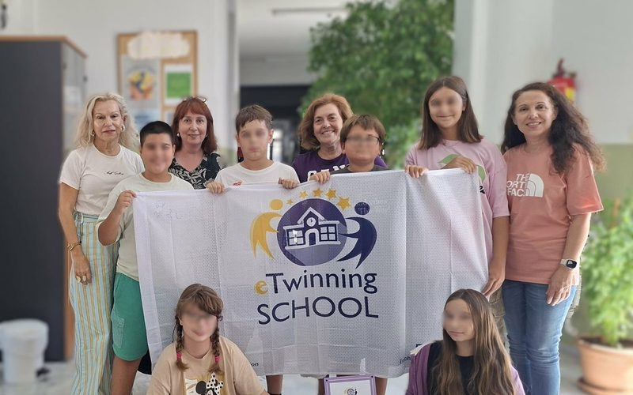
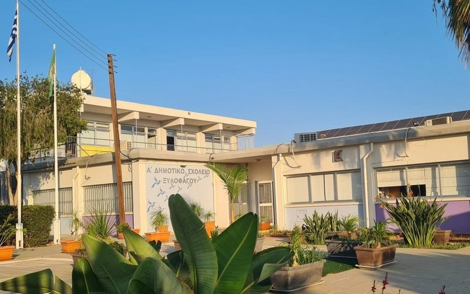

Ό,τι νέο συμβαίνει στα ευρωπαϊκά προγράμματα του σχολείου μας.
The latest from our school's European projects.

eTwinningΠαραλάβαμε την πλακέτα και τη σημαία της Ετικέτας Σχολείου eTwinning: μια διάκριση για όλη τη σχολική μας κοινότητα.
We received the eTwinning School Label plaque and flag: a distinction for our whole school community.
Διαβάστε →Read more →
Erasmus+Πέντε μαθητές της ΣΤ΄ τάξης θα επισκεφθούν το Α΄ Δημοτικό Σχολείο Ξυλοφάγου στην Κύπρο, 19–23 Απριλίου 2027.
Five Grade 6 pupils will visit the 1st Primary School of Xylofagou in Cyprus, 19–23 April 2027.
Διαβάστε →Read more →